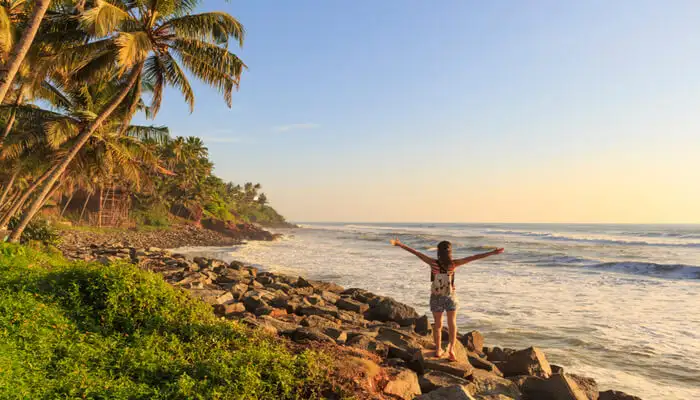
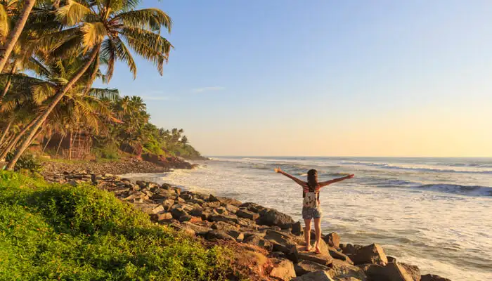

Thiruvananthapuram (/ˌtɪruːvəˌnʌntəˈpʊərəm/; Malayalam: [t̪iɾuʋɐnɐn̪d̪ɐpuɾɐm] (listen)), also known by its former name Trivandrum (/trɪˈvændrəm/),[9] is the capital of the Indian state of Kerala. It is the most populous city in Kerala with a population of 957,730 as of 2011.[3] The encompassing urban agglomeration population is around 1.68 million.[5] Located on the west coast of India near the extreme south of the mainland, Thiruvananthapuram is a major information technology hub in Kerala and contributes 55% of the state's software exports as of 2016.[10][11] Referred to by Mahatma Gandhi as the "Evergreen city of India",[12][1] the city is characterised by its undulating terrain of low coastal hills.[13] The present regions that constitute Thiruvananthapuram were ruled by the Ays who were feudatories of the Chera dynasty.[14] In the 12th century, it was conquered by the Kingdom of Venad.[14] In the 18th century, the king Marthanda Varma expanded the territory, founded the princely state of Travancore, and made Thiruvananthapuram its capital.[15] Travancore became the most dominant state in Kerala by defeating the powerful Zamorin of Kozhikode in the battle of Purakkad in 1755.[16] Following India's independence in 1947, Thiruvananthapuram became the capital of Travancore-Cochin state and remained so until the new Indian state of Kerala was formed in 1956.[17]